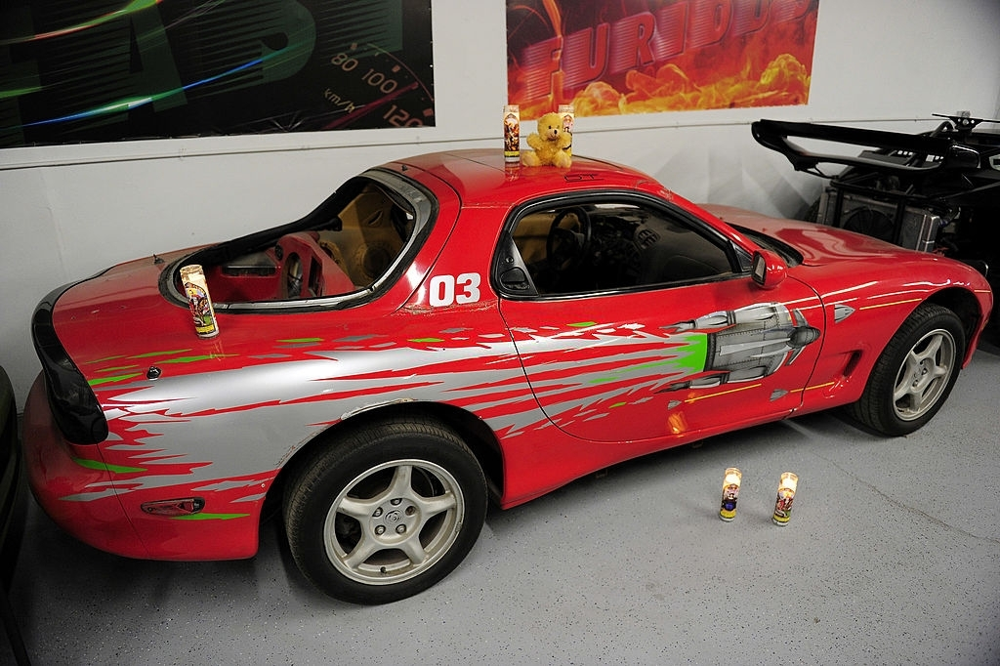
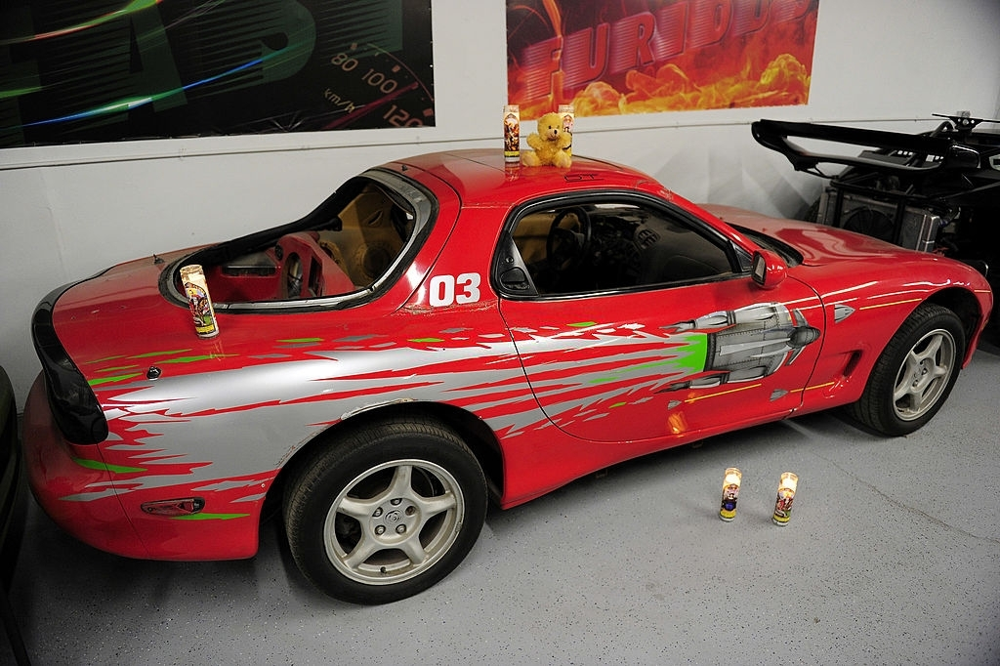

Paul Walker |
(September 12, 1973 - November 30, 2013) |
"I'm a crazy car guy, I've got an airplane hangar full of cars."
- Paul Walker
Biography
Paul William Walker IV was born on September 12, 1973, in Glendale, California, to American parents with mostly English, as well as German, Swiss, and Irish ancestry. His mother, Cheryl (née Crabtree), was a fashion model, and his father, Paul William Walker III, was a sewer contractor and former amateur boxer, who was a two-time Golden Gloves champion. Walker's paternal grandfather, William, had a short-lived boxing career as "'Irish' Billy Walker", while another raced factory cars for Ford in the 1960s. Raised a Mormon,Walker had four younger siblings: Aimee, Ashlie, Caleb, and Cody. He spent the majority of his early life in the Sunland neighborhood of Los Angeles, and graduated from Village Christian School in 1991. Walker subsequently attended several community colleges in Southern California, majoring in marine biology. Walker began his career as a child actor during the 1970s and 1980s, and gained recognition in the early 1990s after appearing in the television soap opera The Young and the Restless. He received praise for his performances in the teen film She's All That and the coming-of-age film Varsity Blues (both 1999), before gaining international fame after starring in The Fast and the Furious (2001). Walker then starred in the commercially successful road thriller Joy Ride (2001), which led to a reputation as an action star. This continued with his performances in box-office disappointments Into the Blue (2005) and Running Scared (2006). Walker also earned praise in other genres, like in the survival drama Eight Below, and for his portrayal of Hank Hansen the war film Flags of Our Fathers (both 2006). Outside of these, Walker then largely appeared in low budget action films, but starred in the commercially successful heist film Takers (2010). Walker died on November 30, 2013 at the age of 40 as a passenger in a single-car crash alongside friend and driver Roger Rodas thought to be caused by driving into a gas pipe. Walker's father and daughter filed separate wrongful death lawsuits against Porsche, which resulted in settlements. At the time of his death, Walker had not completed filming Furious 7 (2015), which was completed after rewrites and stand-ins, including his brothers Cody and Caleb, filled in for Walker. The song "See You Again" by Wiz Khalifa and Charlie Puth was commissioned for the film's soundtrack as a tribute to Walker.
FUN FACTS
- Appeared in commercials for Pampers Diapers at the age of 2.
- Made his TV series debut in a two-part 1986 episode of the Michael Landon drama Highway to Heaven; subsequently appeared on '80s sitcoms Charles in Charge, Diff'rent Strokes and Who's the Boss?
- Was nominated for Best Young Actor in a Daytime Series and Best Youth Actor in a Soap Opera at the 14th and 15th Annual Youth in Film Awards, respectively, for his role on the long-running The Young & the Restless.
- Breakout role came in 2001 with a part in Rob Cohen's car-racing smash The Fast and the Furious, which earned him an MTV Movie Award nomination for Best Breakthrough Performance - Male.
- Combined his longtime love for surfing with his acting career when he starred in 2005's Into the Blue.
- In 2010, founded the charity REACT Worldwide, which sends money and physical aid to areas struck by natural disasters.
- Died in 2013 in a car crash (as the passenger) after attending a charity event
 

Some of Paul Walker's Car Collection
- 1963 Chevrolet Nova Wagon
- 1964 Chevrolet Chevelle Wagon
- 1965 Shelby Ford Mustang GT350SR continuation car
- 1967 Chevrolet II Nova
- 1988 BMW M3 E30
- 1989 Nissan R32 Skyline Race Car
- 1991 BMW M3 E30 Coupe
- 1995 BMW M3 E36 Lightweight
- 1995 BMW M3 E36 Lightweight -- Factory LTW wing and race-livery delete
- 1995 Ford Bronco SUV
- 2000 Audi S4
- 2003 Ford F250 Pickup
- 2004 GMC Sierra 1500 Pickup
- 2005 Harley-Davidson Heritage Softail Classic Motorcycle
- 2006 Toyota Tundra Pickup
- 2008 Suzuki DR-Z400SML Motorcycle
- 2009 Nissan 370Z
- 2011 BMW F800GS Motorcycle
- 2012 Ford Mustang Shelby GT500
- 2013 Ford Mustang Boss 302S Race Car
- 2013 Ford Mustang Shelby GT500
- Audi S4 (B5)
- Boss 302 Mustang (1st gen)
- BMW M1
- BMW 2002tii
- Chevrolet Corvette (C1)
- Ferrari Testarossa
- Ferrari 360 Challenge Stradale
- Ferrari 400i
- Ferrari F355 Spider Fiorano edition
- Ford Bronco II
- Ford GT (1st gen with a Whipple supercharger producing a claimed 800 hp)
- Ford Mustang Cobra R
- Ford Mustang Eleanor recreation
- Lincoln Continental (4th gen) convertible
- Maserati Quattroporte
- Mercedes-Benz 560 SL
- Nissan R34 Skyline GT-R Spec V
- Nissan Silvia (S15)
- Porsche 911 997 GT3 RS (two orange on black, one green on black)
- Porsche 930 Turbo (both in Guards Red)
- Saleen Mustangs
- Saleen SSC (foxbody)
- Saleen SA10 (foxbody)
- Saleen S281-E (SN95)
- Saleen S351 Speedster (SN95)
- Saleen S7
- Touring Alpina
- Toyota Supra Mk4 (targa roof, single turbocharger conversion)
- Rolls-Royce Ghost
- Volvo P1800
Awards and Nominations
- 2002 MTV Movie Award Best On-Screen Team (shared with Vin Diesel) The Fast and the Furious Won
- 2011 Teen Choice Awards Choice Movie Actor – Action Fast Five Nominated
- 2013 Choice Movie: Chemistry (shared with Vin Diesel and Dwayne Johnson) Fast & Furious 6 Nominated
- 2014 MTV Movie Award Best On-Screen Duo (shared with Vin Diesel) Won
- 2015 Teen Choice Awards Choice Movie Actor: Action Furious 7 Won
- Choice Movie: Chemistry (shared with Vin Diesel, Michelle Rodriguez, Tyrese Gibson, Dwayne Johnson, Ludacris) Nominated